1
자율 주행
2차 프로젝트(발표)
김승엽, 한은선, 김동혁
김준희, 박장원, 김나현
2
Contents
프로젝트 개요
기술적 배경
모델 선정
개발 환경
기술 구현 과정
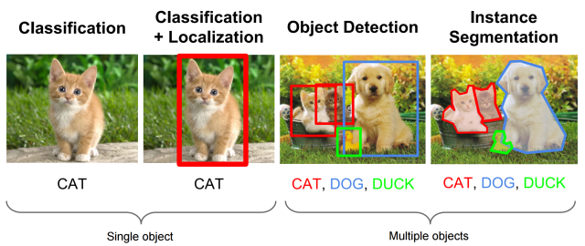
3
개발 목적
Ⅰ. 프로젝트 개요
2차 프로젝트 : 실시간 동적 객체 인식을 위한 동적 객체 인식
3차 프로젝트 : 자율 주행 핵심 기술 구현을 위한 실시간 동적 객체 인식
객체 인식 기술의 필요성 및 역할
이미지나 비디오에서 특정 객체를 탐지하고
분류하는 기술로, 컴퓨터 비전 분야에서
주변 환경을 이해하고 분석하는 데 필수적인 역할
객체 인식이란?
자율주행에서의 필요성
정확한 객체 탐지
차량, 보행자, 신호등, 도로 표지판 등
다양한 객체를 정확하게 인식
위험 예측 및 반응
주행 경로에서 발생할 수 있는 위험을 예측하고 즉각적으로 반응하여 충돌 방지
주행 효율성 향상
최적의 경로를 설정하여 주행 효율성을 높임
4
기술적 배경
Ⅱ. 기술적 배경
기존 객체 탐지 모델과 비교
과거 대표 객체 탐지 모델 R-CNN
검출 방식을 수행하는 대표적인 모델로 이미지 안에서 Bounding box를 생성하기 위해
입력 이미지에서 객체가 있을 가능성이 높은 영역(Region Proposal)을 예측하는
Region Proposal network(RPN) 방식 사용
R-CNN이란?
RPN(Region Proposal network) 의 동작 방식
Region Proposal
CNN
SVM
(Support
Vector Machine)
Bounding Box Regression
이러한 복잡한 과정으로 인해 R-CNN은 속도가 느리고 비용 부담이 크며, 각 절차를 독립적으로 훈련하기 때문에 최적화가 어렵다는 단점 존재
5
기술적 배경
Ⅱ. 기술적 배경
기존 객체 탐지 모델과 비교
YOLO 모델의 특징 및 장점
- 기존 : 객체 검출에서 심층 신경망을 사용
절차 개선
검출 정확도
- YOLO : 객체 검출 전체 과정을 하나의 파이프라인으로 통합하여 처리
- 기존 : 특징 맵 위에 작은 크기의 네트워크, 즉 슬라이딩 윈도우 방식으로 이미지의 모든 위치를 탐색하는 Region Proposal 방식
- YOLO : 훈련과 테스트 단계에서 이미지 전체를 참조하므로 새로운 이미지에 대한 검출 정확도가 높음
YOLO 특징
모델 선정 이유
Ⅲ. 모델 선정 이유
YOLOv5 특성
YOLO 버전 별 특성 비교
기존 라이브러리 및 프레임워크와의 호환성과 안정성이 높고
빠른 속도를 유지하면서도 정확도를 보장하며, 특히 실시간 애플리케이션에 적합
출처 : 객체탐지모델 YOLO의 버전 별 특성 비교 연구
정확도와 속도
사이의 균형
v5
v3,v4
속도 우선
v1,v2
정확도 우선
메모리 제약이
있는 경우
v7,v8
6
7
기술적 배경
Ⅱ. 기술적 배경
기존 객체 탐지 모델과 비교
YOLO 모델의 특징 및 장점
YOLO 모델의 장점(R-CNN과 비교)
비교 항목
YOLOv5
R-CNN
실시간 성능
초당 45~60 프레임(FPS)
자율주행에서 실시간 객체 탐지에 최적화
초당 5~10 프레임(FPS)
2단계 탐지 방식 때문에 속도가 느림
정확도 (COCO mAP)
mAP 0.5 약 50~55%
주로 단순 환경에서 높은 정확도 유지
복잡한 환경에서도 성능 발휘
mAP 0.5 약 55~60%
복잡한 환경에서 세밀한 객체 탐지에
강점이 있어 높은 정확도 제공
모델 크기
7~10 million 파라미터로
메모리 사용량 약 2~3 GB로 경량화되어
다양한 장치에서 쉽게 구동 가능
40~60 million 파라미터로
메모리 사용량 약 8~12 GB로
고성능 하드웨어 필요
추론 시간
이미지당 약 20~25ms로 빠른 추론 시간
이미지당 약 100~200ms로 다소 긴 추론 시간
YOLOv5는 실시간 성능과 경량화된 모델 구조를 통해 빠른 객체 탐지와
높은 효율성을 제공하므로, 자율주행 프로젝트 객체 탐지 모델로 적합
8
모델 선정 이유
Ⅲ. 모델 선정 이유
YOLOv5 구성
손실 함수와 활성화 함수
- 모델의 예측값과 실제값 사이의 차이를 수치화하여 표현하는 함수로 학습 시 최소화하고자 하는 대상
손실 함수란?
활성화 함수란?
이 두 가지 요소는 신경망의 전반적인 성능을 개선하고,
데이터를 보다 효과적으로 이해할 수 있도록 함께 작용
- YOLOv5는 바운딩 박스 예측에 대해 CIoU Loss를 사용하여 정확도를 높임
- 입력값에 비선형성을 부여해 딥러닝 모델이 복잡한 문제를 학습하고 다양한 패턴을 인식
- YOLOv5는 sigmoid(출력층), ReLU(은닉층)활성화 함수 사용
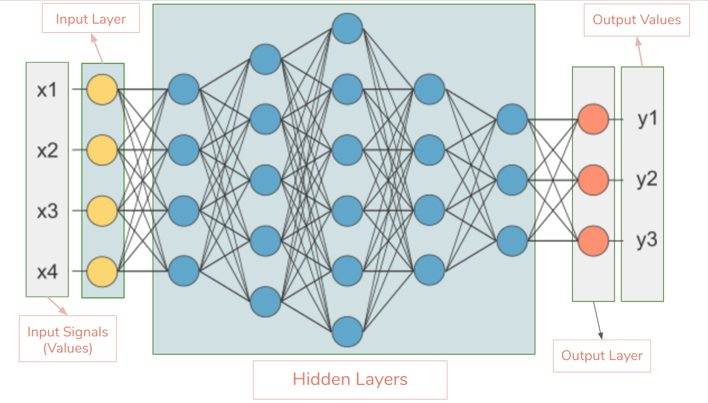
9
모델 선정 이유
Ⅲ. 모델 선정 이유
YOLOv5 구성
손실 함수와 활성화 함수
Sigmoid 사용 이유 및 장점
Sigmoid
ReLU
값을 0과 1 사이로 변환하여
각 클래스의 확률로 해석하고, 출력층에서 특정 객체의
존재 확률 예측하는 데 유리
ReLU 사용 이유 및 장점
음수 입력을 0으로 변환하고
양수는 그대로 출력하여,
깊은 네트워크에서도 기울기가 유지
이는 학습 효율성을 높이는 데 기여
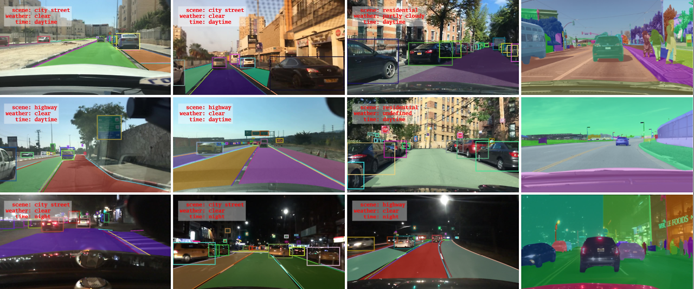
10
개발 환경
Ⅳ. 개발 환경
활용 데이터 셋 및 개발 환경 설정
(최신 안정화된 버전)
자율 주행 차량과 관련된 다양한 객체와 장면을 포함하는
대규모 영상 데이터 셋으로 약 100,000개의 비디오 클립이 포함되어 있음.
각 비디오 클립에서 약 30프레임/초로 촬영되며, 이를 통해 약 3,000,000개의 이미지 프레임을 생성
활용 데이터 셋 : BDD100K
개발 환경 설정
Python version
PyTorch version
TensorFlow version
NumPy version
OpenCV version
Matplotlib version
SciPy
OS
Python
3.7 이상
PyTorch
1.7 이상
TensorFlow 2.6 - 2.10
NumPy 1.19.5 이상
OpenCV
4.1 이상
Matplotlib 3.2.2 이상
SciPy
1.4.1 이상
Window
PyTorch 및
기타 라이브러리
호환성
최신
안정화된 버전
데이터 전처리
및 후처리
실시간 이미지
및 비디오
스트림 처리
결과 시각화
이미지 변환
및 여러 수치 연산
11
데이터 수집 및 처리 방법(YOLO 모델 학습)
개발 환경 구성
CPU -> GPU
CPU보다 GPU에서 학습을 진행하면 모델 학습 시간을 크게 단축
병렬 연산이 가능해 모델의 복잡한 연산을 더 빠르고 효율적으로 수행
메모리 대역폭이 크기 때문에 대용량 데이터를 더 빠르게 처리
가상 환경 사용 이유
버젼 충돌을 방지하고 시스템 파일을 보호하며, 안정적이고 복제 가능한 환경을 제공
각 프로젝트마다 가상 환경을 사용하여 설정하면 개발이 더 수월
Ⅴ. 기술 구현 과정
Anaconda 환경에서 GPU 학습
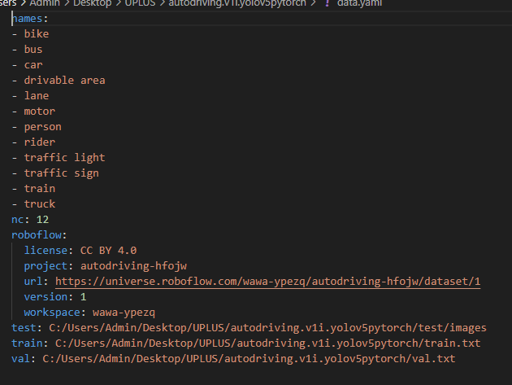
12
데이터 수집 및 처리 방법(YOLO 모델 학습)
개발 환경 구성
데이터 셋 7000개 사용
카테고리 12개로 구성
Ⅴ. 기술 구현 과정
활용 데이터 셋
테스트
훈련
검증
70%
(4891개)
20%
(1394개)
10%
(700개)
학습 코드 설정
이미지 크기 : 640
Batch 크기 : 32
Epochs(반복 횟수) : 50
초기 가중치 파일 : yolov5s.pt
학습된 best 결과 모델 : best.pt
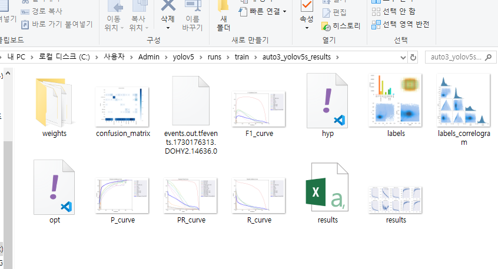
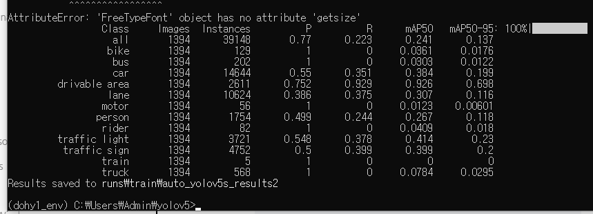
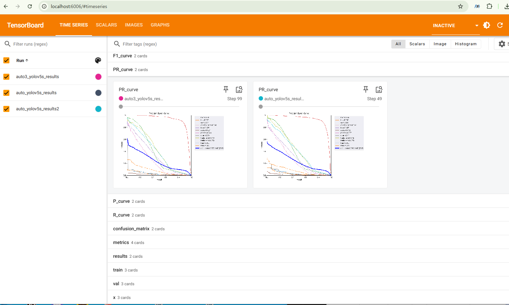
13
학습 결과 확인
학습 완료 후, 결과 요약
Ⅴ. 기술 구현 과정
데이터 수집 및 처리 방법(YOLO 모델 학습)
파일 생성 확인
학습 결과 그래프 확인 - TensorBoard
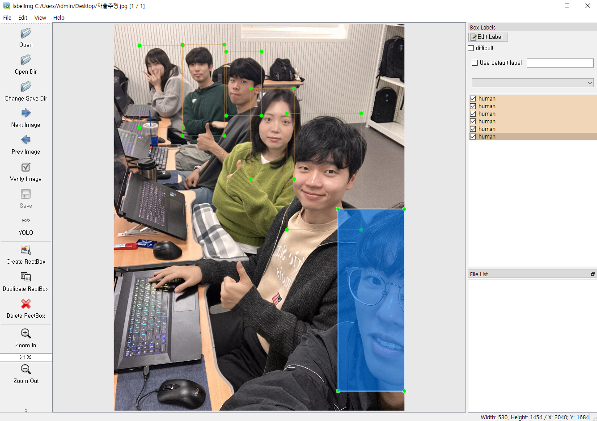
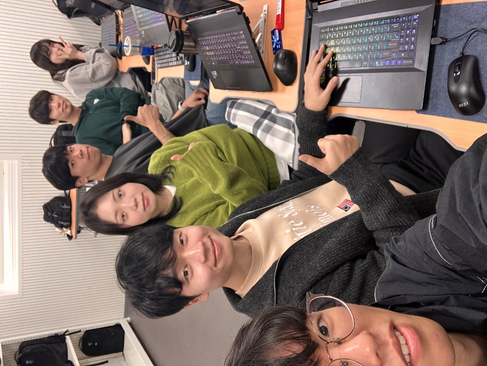
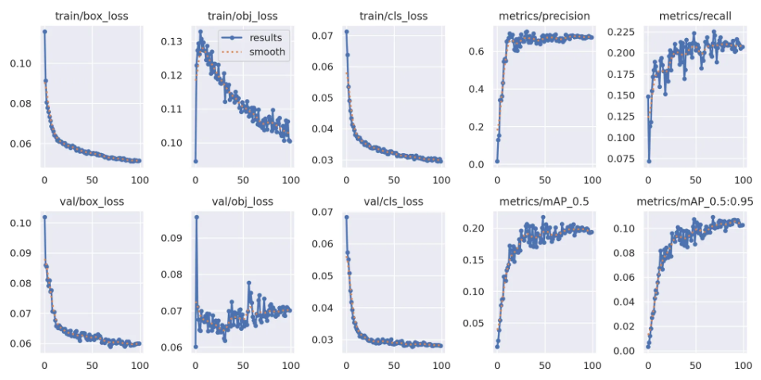
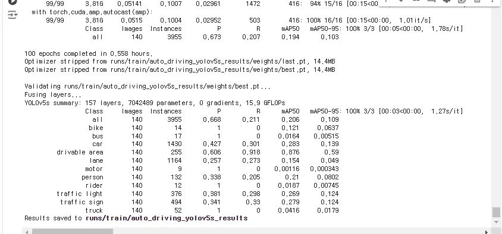
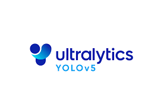
14
14
데이터 수집 및 처리 방법(YOLO 모델 학습)
Ⅴ. 기술 구현 과정
YOLO 모델에 학습시킬 정적 이미지 촬영
객체를 지정하여 라벨링 작업을 수행하고,
모델에 입력 될 수 있도록 크기를 맞추는 리사이즈 작업 진행
③ 데이터 학습 및 평가
① 데이터 수집
② 데이터 전처리
하이퍼 파리미터를 설정하고 데이터로 모델을
훈련하여 성능 지표 그래프로 성능을 분석
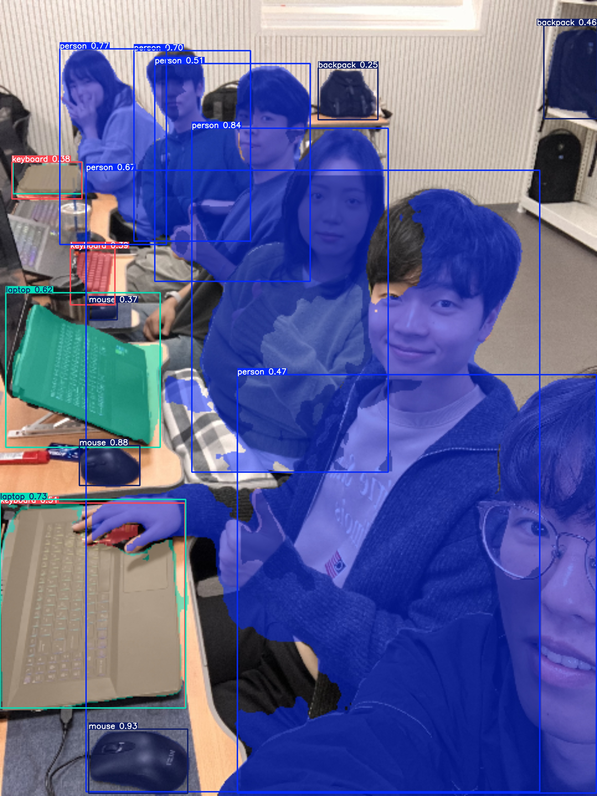
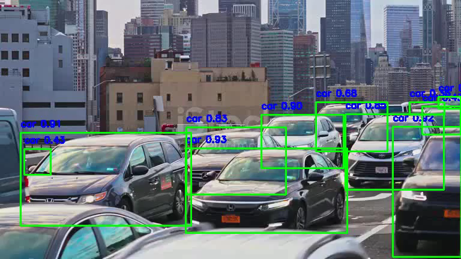
15
15
정적,동적 이미지 객체 감지 테스트
Ⅴ. 기술 구현 과정
객체 감지 후(동적)
정적 데이터(이미지)
동적 데이터(동영상)
객체 감지 후(정적)
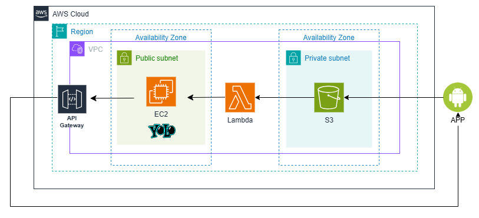
16
기술 구현 계획
Ⅴ. 기술 구현 과정
실시간 처리를 위한 인프라 설계
AWS 클라우드
컴퓨팅 리소스 : 서버 - EC2
스토리지 : 파일 스토리지 - AWS S3
네트워크 설계
VPC
로드밸런싱
17
Q & A